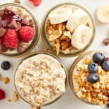

Home
Overnight Oats

The Varieties of Overnight Oats
Overnight oats are a great breakfast food. These not only offer a variety of toppings; but are healthy source to start your day.
While overnight oats are a very simple food to make, it's a dish everyone should know how to replicate.
Ingredients:
- Oats: instant oats are recommended, but any will do
- Milk: any type of milk will do
- Toppings: my go two are strawberries and chocolate chips
How to Make Overnight Oats:
- Start with 1/2 cup of oats; put in a container with a sealed lid.
- Overnight oats are a 50/50 mixture; so, pour in 1/2 cup of your milk of choice.
- Seal the container and store in the fridge overnight.
- Prepare your toppings and place them in a separate container.
- The next morning, mix your oats thoroughly, top your oats with your preferred toppings and enjoy!